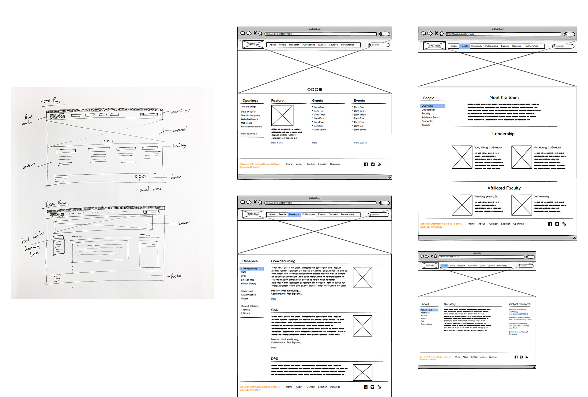
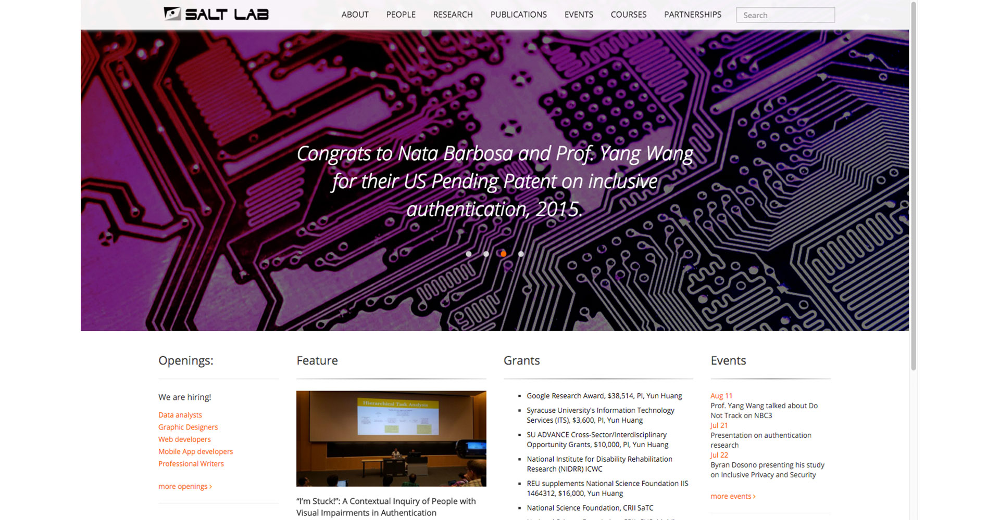
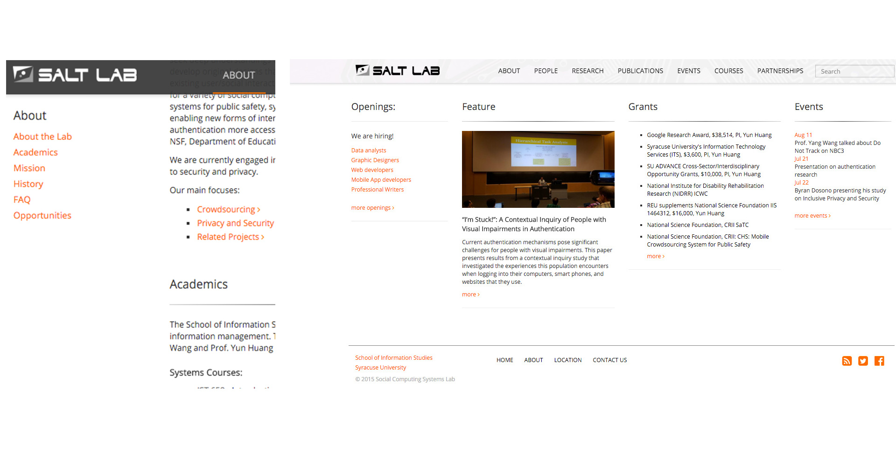
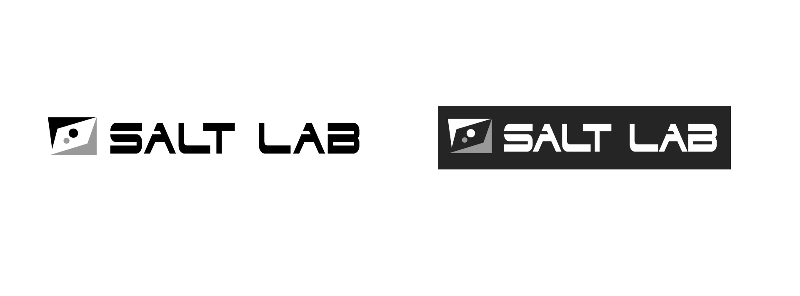

Web design & development
SOCIAL COMPUTING SYSTEMS LAB (SALT) WEBSITE
The Social Computing Systems (SALT) lab is one of the research labs in the School of Information Studies at Syracuse University. SALT lab focuses on systems research in social computing. Researchers work together to gain deeper understanding of how people interact with sociotechnical computing systems. Example projects include mobile crowdsourcing systems for public safety, systems for protecting people's privacy in social media, and mechanisms for making authentication more accessible for people with disabilities.
I joined SALT lab during my junior year to work on an authentication project aiming to improve web accessibility for blind users. Since I'm an undergraduate researcher in the SALT Lab, I decided to redesign the website to showcase the exciting projects that we are working on.
Technologies used: jQuery, HTML, CSS
Sketches and site wireframes
Final product
Home page
About page
Fixed sidebar, one page scroll and site hierarchy
SALT Logo